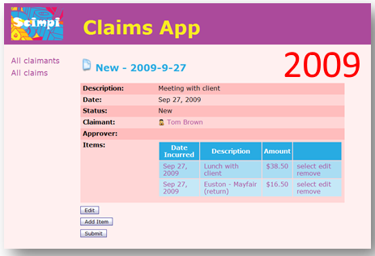
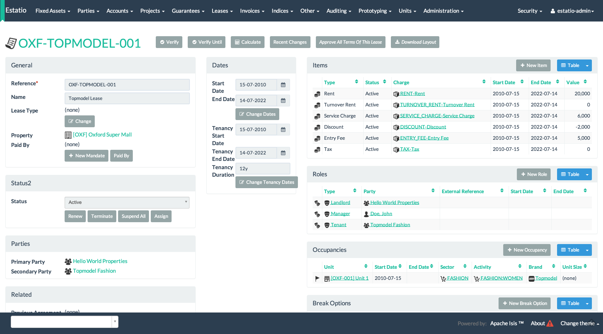

public static class CompletedDomainEvent
extends ToDoItem.ActionDomainEvent {}
@Action(
domainEvent = CompletedDomainEvent.class,
publishing = Publishing.ENABLED
)
public ToDoItem completed() {
setComplete(true);
}Apache Isis - Closing the Architecture/Code Gap
Dan Haywood & Eoin Woods
About Us
Eoin Woods is CTO at Endava, a European IT services company. He is also the author of “Software Systems Architecture”
Dan Haywood is an independent consultant & developer specializing in domain driven design. He is an Apache member and PMC chair for Apache Isis
We met and worked together in the 90s at Sybase, and have (as friends) tracked each other’s respective careers ever since.
Problem of Successful Systems
Long lived applications suffer from architectural problems.
the architectural style erodes until it is hard to discern
not clear how new features fit in the architecture
pattern implementations weaken and become unclear
coherency weakens due to adhoc architecture evolution
Change becomes difficult as implementation and architecture drift apart due to them being different artefact groups.
Specific Problems
Business logic drifts into adjacent layers
Domain model becomes unwieldy ("tactical" changes)
Aspects of the architecture forgotten or misinterpreted
Rushed changes create mismatched components
New components difficult to test, deploy or support
Utility modules grow in size and scope
Decision rationale forgotten leading to poor evolution
Apache Isis (and naked objects)
The Apache Isis framework is an implementation of the naked objects pattern
Named & developed by Richard Pawson and Rob Matthews
further details in Richard’s "Naked Objects" PhD thesis
external examiner was Trygve Reenskaug
A metaphor: the incredible machine
Generic UI/UX
Generic UI allows framework to generate the UI.
Good UI is expensive and difficult to get right
UI and UX skills relatively rare in most organisations
Difficult to create consistent UI at scale
Generated UIs "upgrade" whole UI at once
Avoiding custom development allows easier replacement
Generated UI prevents accidental coupling.
Tradeoff is innability to (easily) support special cases or experimentation.
Generic UIs are "good enough" for many applications
… though it has, admittedly, been a journey to get them to that level!


An example: Estatio
Estatio is an invoicing application for tenants within a shopping centre
Developed for Eurocommercial Properties, currently deployed to Italy and France
The code also happens to be open source (on github)
Customizing the UI
Generic UI can have advantages in development efficiency, UX consistency and future proofing. What are the trade offs?
How much control can an application have on its UI?
Can layout, look-and-feel, flow, colour be changed easily?
What if an application needs a new widget type entirely?
Customizing the UI
Use annotations, provide UI hints
eg
@Actionvs@ActionLayout
Optional
.layout.xmlbasically a DSL, modelled on Bootstrap
CSS
classes and Ids generated from the metamodel
Plugins to render maps, calendars etc.
Other Cross-cutting concerns
a generic UI really treats presentation as a cross-cutting concern
once you have a meta-model in your hands, there are other cross-cutting concerns that can be tackled
given that a significant part of architecture is figuring out how to tackle these "-ilities", this is significant
…
For example
REST (Swagger)
Security
audit trail
i18n
Metamodel validation/constraints
EAI/background processing

Enterprise Architecture
In this context EA is the design of the "system of systems" that forms the technology environment for an organisation
Common concerns for an EA group include:
What is the functional scope of each system?
How do systems interact to support business processes?
Where is data mastered, owned, copied, changed, accessed?
How is data stored?
What technical standardisation is valuable? What what will the standards be?
How can Apache Isis help or hinder the evolution of an enterprise’s technology architecture?
Inferred commands
Each interaction (action invocation or property edit) can be reified into XML
published onto an event bus, eg Camel
we recommend "skinny" events, better separation of responsibilities
can be correlated with audit trail
ie cause/effect
A published action
PublisherService
public interface PublisherService {
void publish(Interaction.Execution<?, ?> execution);
}<?xml version="1.0" encoding="UTF-8" standalone="yes"?>
<ixn:interactionDto xmlns:com="http://isis.apache.org/schema/common"
xmlns:cmd="http://isis.apache.org/schema/cmd"
xmlns:ixn="http://isis.apache.org/schema/ixn">
<ixn:transactionId>8236d616-6fde-45d9-9526-cb7a50b4bd88</ixn:transactionId>
<ixn:execution xsi:type="ixn:actionInvocationDto"
interactionType="action_invocation"
xmlns:xsi="http://www.w3.org/2001/XMLSchema-instance">
<ixn:sequence>0</ixn:sequence>
<ixn:target type="todo.ToDoItem" id="0"/>
<ixn:memberIdentifier>todoapp.dom.todoitem.ToDoItem#completed()</ixn:memberIdentifier>
<ixn:parameters/>
<ixn:returned type="reference" null="false">
<com:reference type="todo.ToDoItem" id="0"/>
</ixn:returned>
<ixn:user>todoapp-admin</ixn:user>
<ixn:title>todo.ToDoItem:0: completed()</ixn:title>
<ixn:metrics>
<ixn:timings>
<com:startedAt>2016-09-19T20:36:03.414+01:00</com:startedAt>
<com:completedAt>2016-09-19T20:36:03.418+01:00</com:completedAt>
</ixn:timings>
<ixn:objectCounts>
<ixn:loaded before="3" after="3"/>
<ixn:dirtied before="0" after="1"/>
</ixn:objectCounts>
</ixn:metrics>
</ixn:execution>
</ixn:interactionDto>Concluding
…
…
…
Example Apps
Learning More
dan@haywood-associates.co.uk and @dkhaywood
eoin.woods@endava.com and @eoinwoodz
slide deck at github.com/danhaywood/jaxlondon2016
Appendix: Architectural Constraints
Implementation and architecture part company when it is hard to remember the architectural constraints
Constraints are there to reduce implementation freedom
Allow focus on what is important
Hard to know how architectural constraints are realised
Frameworks like Apache Isis try to embody the constraints in the framework
Try to make the "right" thing the "easy" thing
Metamodel validators
Used by framework itself
eg to enforce naming conventions
Extensible for other application-specific use cases
Metamodel itself is extensible
Extension object pattern
Appendix: Maintainable Monoliths
Current fashion is towards "microservices" (often without much thought as to trade offs). However monoliths are perfectly maintainable if well built and evolved.
Genuine modularity and dependency management is key
Understanding many types of coupling (message, data, control, global data, pathological)
Ensure high cohesion in modules to avoid "buckets of code"
Need to achieve measurement and visibility
This is all easier to enforce when code is physically separate (hence microservices) but can be done in a monolith perfectly well.
How does Apache Isis do it?

Modularity support in Apache Isis
Mixins move functionality out of domain objects
composite UI creates a coherent whole for the end-user
Domain events coordinate/veto interactions between different modules within the system
URNs, enabling polymorphic associations
"table of two halves" pattern
Mixins
Mixins
@Mixin
public class ToDoItem_next {
private final ToDoItem toDoItem;
public ToDoItem_next(final ToDoItem toDoItem) { ... }
public ToDoItem $$() { ... }
}Domain events
public static class CompletedDomainEvent
extends ToDoItem.ActionDomainEvent {}
@Action(
domainEvent = CompletedDomainEvent.class
)
public ToDoItem completed() {
setComplete(true);
}@DomainService
public class ItemCompletedSubscriber {
@Subscribe
public void on(ToDoItem.CompletedDomainEvent ev) {
ToDoItem item = ev.getSource();
switch(ev.getEventPhase()) {
case HIDE:
ev.hide();
break;
}
}
}@DomainService
public class ItemCompletedSubscriber {
@Subscribe
public void on(ToDoItem.CompletedDomainEvent ev) {
ToDoItem item = ev.getSource();
switch(ev.getEventPhase()) {
case DISABLE:
ev.disable(...);
break;
}
}
}@DomainService
public class ItemCompletedSubscriber {
@Subscribe
public void on(ToDoItem.CompletedDomainEvent ev) {
ToDoItem item = ev.getSource();
switch(ev.getEventPhase()) {
case VALIDATE:
ev.invalidate(...);
break;
}
}
}@DomainService
public class ItemCompletedSubscriber {
@Subscribe
public void on(ToDoItem.CompletedDomainEvent ev) {
ToDoItem item = ev.getSource();
switch(ev.getEventPhase()) {
case HIDE:
break;
case DISABLE:
break;
case VALIDATE:
break;
case EXECUTING:
break;
case EXECUTED:
break;
}
}
}Pre-built modules
Technical modules
Generic (business) sub-domains
Appendix: Alternative UIs
A framework generated UI allows for change. How does this work?
Replace the UI technology in use without affecting core code?
Provide more than one UI simultaneously?
What does Apache Isis assume about the UI technology it uses?
GES Consultor

User Archetypes
Appendix: Coupling to the Framework?
Most frameworks are a high commitment "lifestyle choice". What is being coupled to Apache Isis like?
Constraints on the domain model code?
Degree of dependence domain code needs on Apache Isis?
Degree of dependence domain code generally has on Apache Isis?
Reuse Apache Isis domain models?
Replace 3rd party components used by Apache Isis? (e.g. persistence layer ORM)
Decoupling from the framework
Apache Isis is a framework, not a library
Domain objects have a compiled-time coupling to the "applib" (annotations), but that’s about all
Could deploy an Apache Isis app on Spring, for example
… or any other framework providing runtime support for dependency injection and an ORM
Beliefs/prejudices
Apache Isis is an opinionated framework
One opinion we hold is there is too much emphasis on technical concerns (and not enough on the domain)
exhibit A: microservices
another: the UI is a fashion item; it doesn’t make sense to try to infer the domain from the outside-in
start at the domain model, work your way out
A feedback loop is the most important thing
with testability a close second
Support for Testing
we set up test data for prototyping using a mini-framework called "fixture scripts"
we also have another small testing framework that emulates the UI
reuse the same fixtures as used in prototyping
the
WrapperFactoryservice creates a proxy around domain objectsenforces the rules of the generic UI layer
@Test
public void name_already_in_use_by_contact() throws Exception {
// given
final String existingName =
fs.getContacts().get(1).getName();
// expect
thrown.expect(InvalidException.class);
thrown.expectMessage("Reason: " +
"This name is already in use by another contact");
// when
wrap(this.contact).edit(existingName, null, null, null);
}